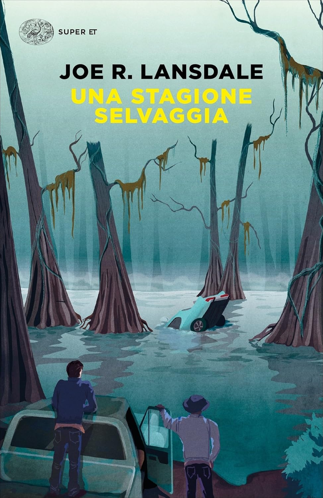
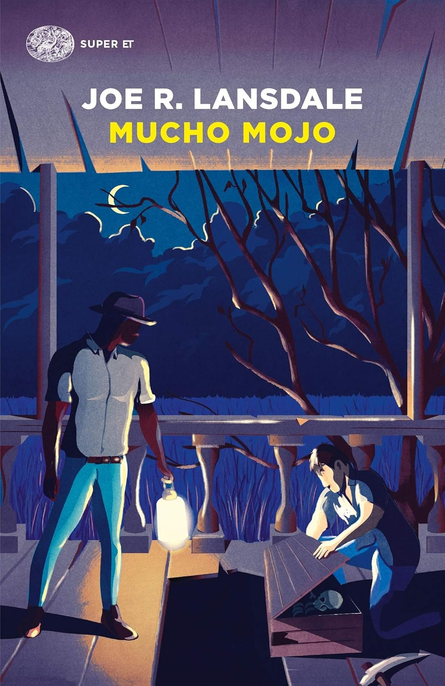
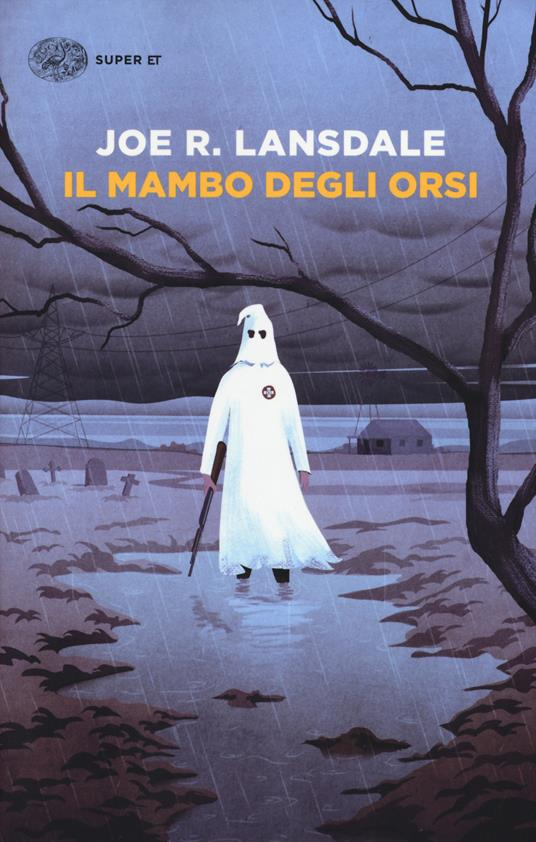
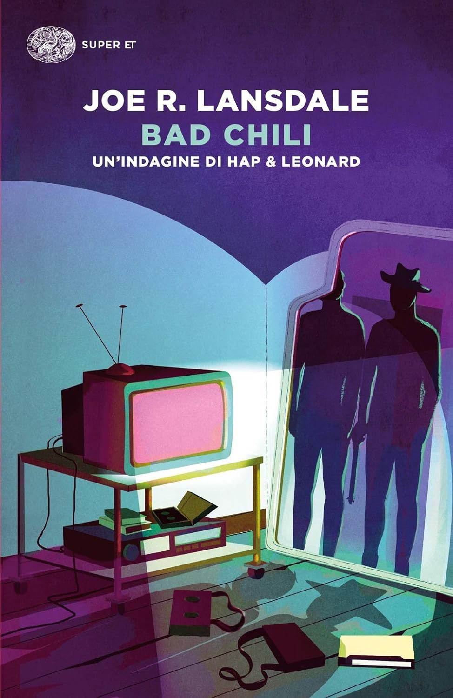
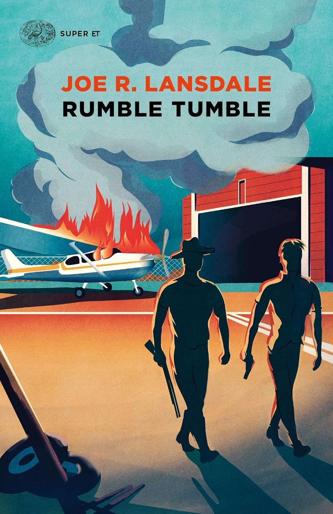
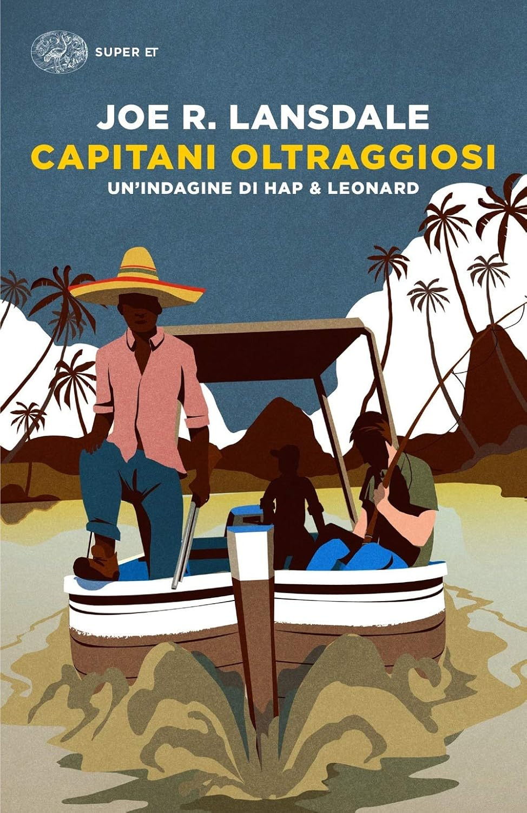

Texas, fine anni ‘80.
Hap e Leonard è la classica coppia di amici in cui gli opposti si attraggono: Hap è bianco, etero, sensibile e vota per i Democratici mentre Leonard è nero, gay, rissoso e vota per i Repubblicani.
Cos’hanno in comune? Una sete di giustizia e la capacità di cacciarsi nei casini.
Da queste premesse nasce una serie che a ogni volume ti fa sentire come durante una serata tra amici che conosci da sempre.
Leggetela se volete dimenticare il tempo che scorre e non fatevi spaventare dalla quindicina di volumi. Alla fine di ogni volume ne vorrete un altro per tanti motivi: i continui battibecchi tra Hap e Leonard, i colpi di scena, il linguaggio concreto e terra terra di Lansdale, la varietà e l’ottima caratterizzazione anche dei personaggi secondari, il black humour e infine la capacità dello scrittore di affrontare temi complicati come razzismo, povertà, droga, omofobia e altro nonostante il tono apparentemente leggero dei romanzi.
Ammetto di non aver ancora finito di leggere tutta la serie, ma ecco i punti di forza dei volumi che ho letto:

Una stagione selvaggia: il punto forte di questo romanzo che ci fa entrare nel mondo di Hap e Leonard è proprio la scoperta della coppia di amici e del loro amore/odio. I due sono tutti presi nel tentativo di trovare una macchina abbandonata in una palude che, si suppone, contenga un bel malloppo di dollari; ciò che tiene davvero incollati alle pagine sono i continui battibecchi esilaranti tra Hap e Leonard che nei fatti, oltre gli insulti, si vogliono bene.

Mucho mojo: i punti forti di questo romanzo sono due. Primo fra tutti, grazie a un’indagine su un mistero lasciato da suo zio appena defunto, approfondiamo il personaggio di Leonard e scopriamo un lato sensibile oltre la sua dura scorza. Il secondo è il cambiamento di focus dal primo al secondo romanzo. Se nel primo trovavamo più avventura, qui Lansdale ci dà conto di ottime capacità nel trattare trame che vanno più verso le detective stories. C’è forse meno azione ma è ampiamente compensata dai temi trattati e dal livello di approfondimento.

Il mambo degli orsi: questo romanzo ruota intorno alla scomparsa di Florida, ex fidanzata di Hap, e alla sua ricerca. Stavolta il punto forte è il trattamento del tema del razzismo e forse questo è, tra i sei volumi che ho letto, quello dal tono più cupo; il battibeccare di Hap e Leonard, come sempre, tiene in quota gli eventi e la suspense finale è quasi insopportabile. Ce la farà Hap a tornare a casa vivo? E soprattutto, in che condizioni?

Bad Chili: in questo romanzo, a padrone è la quantità e la concatenazione magistrale degli eventi. Qua dentro c’è di tutto tra scoiattoli impazziti, tornadi da record e aggressioni agli omosessuali nei parchi allo scopo di farne un giro di video porno da vendere sottobanco. E visto che Raul, il compagno di Leonard, è coinvolto, i due non possono non buttarsi a capofitto nell’investigare la banda di malavitosi responsabili; tutto questo mentre, allo stesso tempo, Hap deve trovare il modo più o meno legale di scagionare Leonard dall’omicidio dell’amante di Raul...

Rumble Tumble: Hap e Leonard devono aiutare Brett, la nuova fidanzata di Hap, a sottrarre la figlia di lei da un giro di prostituzione e dalle grinfie di un pappone stanziato in un’altra città. Tra esplosioni e botte da orbi, questo è il romamzo in cui la suspense va più alle stelle tra quelli finora letti e il coinvolgimento maggiore del lettore ha proprio a che fare con la preoccupazione per come faranno Hap e Leonard a portare a termine la missione e a uscirne vivi.

Capitani oltraggiosi: forse il più debole, strutturalmente, tra i volumi letti. Ho trovato l’inizio un po’ poco verosimile rispetto a ciò che di solito Lansdale propone e qualche rallentamento di ritmo – dovuto a un viaggio in crociera in cui tutto sommato non succede molto - . Infine, verso la metà c’è una scelta di trama che a me è sembrata chiaramente concertata per forzare avanti la storia.
Il romanzo tiene quota, probabilmente, solo grazie al duo ormai rodato.